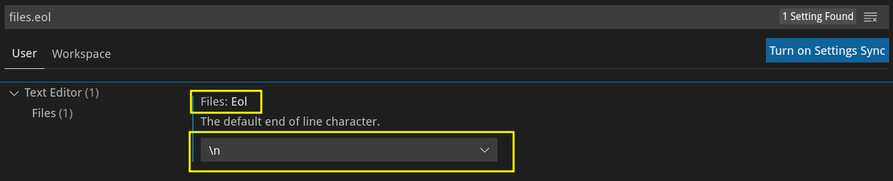

CRLF和LF
重视由于历史的原因，各种不同的操作系统在处理行尾结束符采取了不同的处理方法：
- CRLF(carriage return line feed)，即“回车换行”，是Windows下的文件换行符
\r\n - LF(line feed)，即“换行”，是类Unix下的文件换行符
\n - CR(carriage return)，即“回车”，是Mac OS下的文件换行符
\r（现在Mac OS X下已经改回LF）
关于产生CRLF和LF的历史原因可以看这篇文章：CRLF和LF的差异
配置编辑器eol
CRLF冲突导致最直接的问题就是Windows上写的Shell脚本无法在Linux上运行。由于Windows上编写的Shell脚本以CRLF换行，Linux上无法正确识别换行符，于是会一直报告语法错误。
临时解决办法则是批量替换CRLF为LF：!#/bin/bash
find . -type f -print0 | xargs -0 sed -i s/\r//g
但最终的解决办法还是要配置编辑器的换行规则(eol)：。
例如：VSCode：右下角会显示当前文本的换行规则，建议一个开发团队里统一采用LF作为换行规则。
在File、Preference、Setting中搜索files.eol，设置为\n

Git配置CRLF和LF转换规则
Git对换行符敏感，需要以来换行来比对文本差异，为了兼容CRLF和LF提供了如下配置：git config --global core.autocrlf [true|false|input]
Git为了解决上面提出的问题，会自动对换行符进行转换，转换的方案有三种：
git config --global core.autocrlf true在提交的时候将CRLF转换为LF，在拉取（检出checkout）代码时将LF转换为CRLF。（这种方案在Windows系统中默认，在提交时Git会给出警告，告知CRLF被转为了LF）git config --global core.autocrlf input在提交的时候将CRLF转换为LF，在拉取（检出checkout）代码时不进行转换。（在类Unix操作系统中默认）git config --global core.autocrlf false不进行任何的转换（这种方案在跨平台的团队协作中，不推荐使用）
可以发现，如果不使用第三种方案，在Git仓库（包括本地和远程仓库）中保存的换行符都是默认使用LF表示的。
一般在项目中，为了避免项目同时出现CRLF和LF，还可以开启Git的safecrlf检查。有如下几种配置可选：
git config --global core.safecrlf true拒绝提交包含混合换行符的文件 (一般设置为true)git config --global core.safecrlf false允许提交包含混合换行符的文件git config --global core.safecrlf warn提交包含混合换行符的文件时给出警告
为了避免在每个开发人员的电脑上都依据操作系统和编辑器去做如上配置，可以将配置放在项目中的.gitattributes中，它只针对一个单一的仓库。
text=auto：采用Git认为最好的方式来处理文件的换行符，在.gitattributes中的默认配置项是按照这种方式处理的。(如果是文本文件，则在文件入Git库时，行尾自动转换为LF。如果已经在入Git库中的文件的行尾是CRLF，则文件在入Git库时，不再转换为LF。)-text：表示让git在checkin以及checkout的时候，对end-of-line不做任何转换。text：表示在checkin的时候会被转换为LF（在repository中的文件结束符是LF），如果需要控制在checkout的时候的换行符，需要结合eol进行设置（也就是控制working tree中的文件的结尾符，需要通过eol设置）。text=auto和text的区别在于，text=auto由Git来确定是不是文本文件，从而进行转换；而text表示，你确定这个path就是文本文件，会直接对这个path进行转换，而不是有Git来决定是否转换。如果没有指定text，git会使用全局配置中的core.autocrlf来进行eol的转换。core.autocrlf需要自己在自己的电脑上进行配置。eol=crlf：对左边匹配的文件统一使用CRLF换行符格式，如果有文件中出现LF将会转换成CRLF;也就是说，在checkin和checkout的时候，文件中都是CRLF，LF会被转换为CRLF。eol=lf：对左边匹配的文件统一使用LF换行符格式，如果有文件中出现CRLF将会转换成LF;也就是说，在checkin和checkout的时候，文件中都是LF，CRLF会被转换为LF。binary: 告诉Git该文件为二进制，防止Git修改该文件。Git不会对其中的换行符进行改变。
示例：# Set the default behavior, in case people don't have core.autocrlf set.
* text=auto
# Explicitly declare text files you want to always be normalized and converted
# to native line endings on checkout.
*.c text
*.h text
# Declare files that will always have CRLF line endings on checkout.
*.sln text eol=crlf
# Denote all files that are truly binary and should not be modified.
*.png binary
*.jpg binary